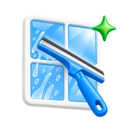

Xizmatni tanlang
Kerakli xizmatni tanlab, qisqa arizaga o‘ting.
Ichki va tashqi oynalar, romlar va tokchalarni professional vositalar bilan yuvamiz.

Sifat kafolatiNatija yoqmasa, bepul qayta tozalaymizKerakli xizmatni tanlab, qisqa arizaga o‘ting.
Faqat ism va telefon raqamingiz yetarli.
Manzil, vaqt, xizmat tarkibi va narxni telefonda aniqlashtiring.